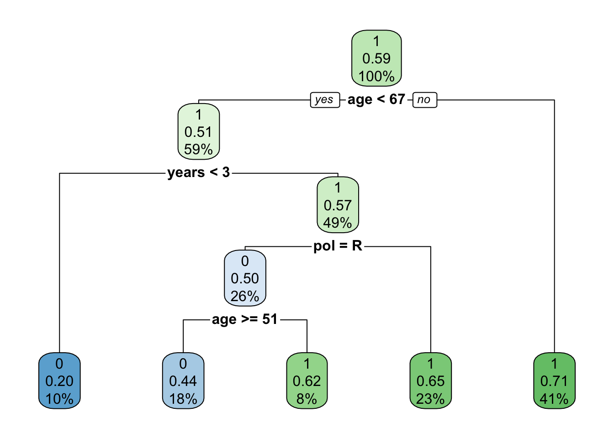

Chapter 18 Building a decision tree in R
In this lab activity, we will use the rpart R package to build a decision tree classifier.
18.1 Dependencies and setup
We’ll use the rpart, rpart.plot, and caret packages in this activity.
If you do not have these packages installed, you will need to do so (use the install.packages command).
library(rpart) # Used to build decision tree model
library(rpart.plot) # Used to visualize trees
library(caret) # Used to build a fancy confusion matrix## Loading required package: lattice##
## Attaching package: 'caret'## The following object is masked from 'package:purrr':
##
## liftI encourage you to look up the documentation for these packages.
We’ll also use the following packages:
library(tidyverse)Next, we’ll load the dataset that contains data for the 100 US senators as of summer 2020. Depending on your working directory, you may need to adjust the path to the data file.
senator_data <- read_csv("lecture-material/week-06/senate-data.csv")## Rows: 100 Columns: 14
## ── Column specification ───────────────────────────────────────────────────────────────────────────────────────────────────────────────────
## Delimiter: ","
## chr (3): first, last, pol
## dbl (11): age, law, mil, soc, edu, med, bus, agr, fin, years, approval
##
## ℹ Use `spec()` to retrieve the full column specification for this data.
## ℹ Specify the column types or set `show_col_types = FALSE` to quiet this message.senator_data$pol <- as.factor(senator_data$pol)
senator_data$law <- as.factor(senator_data$law)
senator_data$mil <- as.factor(senator_data$mil)
senator_data$soc <- as.factor(senator_data$soc)
senator_data$edu <- as.factor(senator_data$edu)
senator_data$med <- as.factor(senator_data$med)
senator_data$bus <- as.factor(senator_data$bus)
senator_data$agr <- as.factor(senator_data$agr)
senator_data$fin <- as.factor(senator_data$fin)
senator_data$approval <- as.factor(senator_data$approval)
head(senator_data)## # A tibble: 6 × 14
## first last pol age law mil soc edu med bus agr fin years
## <chr> <chr> <fct> <dbl> <fct> <fct> <fct> <fct> <fct> <fct> <fct> <fct> <dbl>
## 1 Richa… Shel… R 86 1 0 0 0 0 0 0 0 33
## 2 Doug Jones D 66 1 0 0 0 0 0 0 0 2
## 3 Lisa Murk… R 63 1 0 0 0 0 0 0 0 17
## 4 Dan Sull… R 55 1 1 0 0 0 0 0 0 5
## 5 Kyrst… Sine… D 43 1 0 1 0 1 0 0 0 1
## 6 Martha McSa… R 54 0 1 0 0 0 0 0 0 1
## # … with 1 more variable: approval <fct>These data were taken from a website of senator rankings. Each row in these data describes a senator with the following attributes:
first- First namelast- Last namepol- Political party (democrat, republican, or independent)age- Age of the senatorlaw- Binary attribute describing whether senator had a previous career in law enforcementmil- Binary attribute describing whether senator had a previous career in the militarysoc- Binary attribute describing whether senator had a previous career in social servicesedu- Binary attribute describing whether senator had a previous career in educationmed- Binary attribute describing whether senator had a previous career in medicinebus- Binary attribute describing whether senator had a previous career in businessagr- Binary attribute describing whether senator had a previous career in aggriculturefin- Binary attribute describing whether senator had a previous career in financeyears- Number of years in officeapproval- Approval class. class=0 means voters don’t approve of them, and class=1 means that voters do approve of them.
18.2 Building a decision tree
We can use the rpart function to build a decison tree:
model <- rpart(
formula = approval ~ pol + age + law + mil + soc + edu + med + bus + agr + fin + years,
data = senator_data,
parms = list(split="information")
)
model## n= 100
##
## node), split, n, loss, yval, (yprob)
## * denotes terminal node
##
## 1) root 100 41 1 (0.4100000 0.5900000)
## 2) age< 66.5 59 29 1 (0.4915254 0.5084746)
## 4) years< 2.5 10 2 0 (0.8000000 0.2000000) *
## 5) years>=2.5 49 21 1 (0.4285714 0.5714286)
## 10) pol=R 26 13 0 (0.5000000 0.5000000)
## 20) age>=50.5 18 8 0 (0.5555556 0.4444444) *
## 21) age< 50.5 8 3 1 (0.3750000 0.6250000) *
## 11) pol=D 23 8 1 (0.3478261 0.6521739) *
## 3) age>=66.5 41 12 1 (0.2926829 0.7073171) *If you’ve never seen the formula syntax before, I recommend reading up on it a bit: https://r4ds.had.co.nz/model-basics.html?q=formula#formulas-and-model-families
In the formula used to build our decision tree model, approval is our dependent variable and all of the predictor attributes to the right of the ~ are our independent variables.
We can use the summary function for a little bit more information about our model:
summary(model)## Call:
## rpart(formula = approval ~ pol + age + law + mil + soc + edu +
## med + bus + agr + fin + years, data = senator_data, parms = list(split = "information"))
## n= 100
##
## CP nsplit rel error xerror xstd
## 1 0.07317073 0 1.0000000 1.000000 0.1199593
## 2 0.02439024 2 0.8536585 1.292683 0.1217315
## 3 0.01000000 4 0.8048780 1.365854 0.1210700
##
## Variable importance
## years age pol agr law edu mil
## 46 36 9 5 2 1 1
##
## Node number 1: 100 observations, complexity param=0.07317073
## predicted class=1 expected loss=0.41 P(node) =1
## class counts: 41 59
## probabilities: 0.410 0.590
## left son=2 (59 obs) right son=3 (41 obs)
## Primary splits:
## age < 66.5 to the left, improve=2.0126500, (0 missing)
## years < 2.5 to the left, improve=1.2801170, (0 missing)
## pol splits as RRL, improve=0.8920908, (0 missing)
## fin splits as RL, improve=0.3974025, (0 missing)
## soc splits as RL, improve=0.1539107, (0 missing)
## Surrogate splits:
## years < 16 to the left, agree=0.75, adj=0.390, (0 split)
## pol splits as LRL, agree=0.61, adj=0.049, (0 split)
## agr splits as LR, agree=0.61, adj=0.049, (0 split)
## mil splits as LR, agree=0.60, adj=0.024, (0 split)
## edu splits as LR, agree=0.60, adj=0.024, (0 split)
##
## Node number 2: 59 observations, complexity param=0.07317073
## predicted class=1 expected loss=0.4915254 P(node) =0.59
## class counts: 29 30
## probabilities: 0.492 0.508
## left son=4 (10 obs) right son=5 (49 obs)
## Primary splits:
## years < 2.5 to the left, improve=2.4206870, (0 missing)
## bus splits as RL, improve=0.7882244, (0 missing)
## age < 58.5 to the left, improve=0.4144379, (0 missing)
## pol splits as R-L, improve=0.2210771, (0 missing)
## law splits as RL, improve=0.2084032, (0 missing)
## Surrogate splits:
## age < 44 to the left, agree=0.847, adj=0.1, (0 split)
## agr splits as RL, agree=0.847, adj=0.1, (0 split)
##
## Node number 3: 41 observations
## predicted class=1 expected loss=0.2926829 P(node) =0.41
## class counts: 12 29
## probabilities: 0.293 0.707
##
## Node number 4: 10 observations
## predicted class=0 expected loss=0.2 P(node) =0.1
## class counts: 8 2
## probabilities: 0.800 0.200
##
## Node number 5: 49 observations, complexity param=0.02439024
## predicted class=1 expected loss=0.4285714 P(node) =0.49
## class counts: 21 28
## probabilities: 0.429 0.571
## left son=10 (26 obs) right son=11 (23 obs)
## Primary splits:
## pol splits as R-L, improve=0.5805888, (0 missing)
## age < 60.5 to the left, improve=0.4295409, (0 missing)
## law splits as RL, improve=0.2763052, (0 missing)
## years < 8 to the right, improve=0.2186185, (0 missing)
## bus splits as RL, improve=0.1644552, (0 missing)
## Surrogate splits:
## years < 10 to the left, agree=0.653, adj=0.261, (0 split)
## law splits as LR, agree=0.633, adj=0.217, (0 split)
## age < 50 to the left, agree=0.571, adj=0.087, (0 split)
## soc splits as LR, agree=0.551, adj=0.043, (0 split)
## bus splits as RL, agree=0.551, adj=0.043, (0 split)
##
## Node number 10: 26 observations, complexity param=0.02439024
## predicted class=0 expected loss=0.5 P(node) =0.26
## class counts: 13 13
## probabilities: 0.500 0.500
## left son=20 (18 obs) right son=21 (8 obs)
## Primary splits:
## age < 50.5 to the right, improve=0.3640124, (0 missing)
## years < 8 to the right, improve=0.3107940, (0 missing)
##
## Node number 11: 23 observations
## predicted class=1 expected loss=0.3478261 P(node) =0.23
## class counts: 8 15
## probabilities: 0.348 0.652
##
## Node number 20: 18 observations
## predicted class=0 expected loss=0.4444444 P(node) =0.18
## class counts: 10 8
## probabilities: 0.556 0.444
##
## Node number 21: 8 observations
## predicted class=1 expected loss=0.375 P(node) =0.08
## class counts: 3 5
## probabilities: 0.375 0.62518.3 Visualizing our decision tree
We’ll use functionality from the rpart.plot package to visualize the decision tree we built:
# If you want to save the visualization, uncomment the next few lines
pdf("decision_tree.pdf")
rpart.plot(model)
dev.off()## quartz_off_screen
## 2# (this isn't using ggplot, so we can't use ggsave)
# Redraw plot to make it show up in our Rmd doc
rpart.plot(model)
18.4 Evaluating the accuracy of our decision tree
Our goal with this model was primarily descriptive. That is, we wanted to learn more about the properties of our senators dataset instead of building a model to predict the approval rating of unknown senators.
As such, we did not create an explicit training and testing set. In essence, the entire senator dataset is our “training set”. So, while we don’t have a testing set to evaluate our model, we can evaluate our model’s accuracy on the training set.
ground_truth <- senator_data$approval
training_predictions <- predict(
model,
data=senator_data,
type="class"
)
confusion_matrix <- table(ground_truth, training_predictions)
confusion_matrix## training_predictions
## ground_truth 0 1
## 0 18 23
## 1 10 49We can also use the confusionMatrix function from the caret package to build a fancier confusion matrix for us.
confusionMatrix(confusion_matrix)## Confusion Matrix and Statistics
##
## training_predictions
## ground_truth 0 1
## 0 18 23
## 1 10 49
##
## Accuracy : 0.67
## 95% CI : (0.5688, 0.7608)
## No Information Rate : 0.72
## P-Value [Acc > NIR] : 0.88840
##
## Kappa : 0.2832
##
## Mcnemar's Test P-Value : 0.03671
##
## Sensitivity : 0.6429
## Specificity : 0.6806
## Pos Pred Value : 0.4390
## Neg Pred Value : 0.8305
## Prevalence : 0.2800
## Detection Rate : 0.1800
## Detection Prevalence : 0.4100
## Balanced Accuracy : 0.6617
##
## 'Positive' Class : 0
## 18.5 Using our decision tree to make a prediction
Let’s pretend that a mysterious new senator shows up to join the US senate one day (ignoring any and all laws that would prevent this from happening in reality).
# Make an empty dataframe w/correct attributes to hold new senator.
new_senator <- senator_data[0,0:13]
# Bind new mystery senator to empty dataframe
new_senator <- rbind(
new_senator,
list(
fist="Mystery",
last="Senator",
pol="I",
age=42,
law=0,
mil=0,
soc=0,
edu=0,
med=0,
bus=0,
agr=0,
fin=0,
years=0
)
)
# Turn new senator columsn into factors where appropriate
new_senator$pol <- as.factor(new_senator$pol)
new_senator$law <- as.factor(new_senator$law)
new_senator$mil <- as.factor(new_senator$mil)
new_senator$soc <- as.factor(new_senator$soc)
new_senator$edu <- as.factor(new_senator$edu)
new_senator$med <- as.factor(new_senator$med)
new_senator$bus <- as.factor(new_senator$bus)
new_senator$agr <- as.factor(new_senator$agr)
new_senator$fin <- as.factor(new_senator$fin)
# I know that was all a little annoying just to predict a hand-crafted example.
# Usually the things you want to predict are in a file, so it's less annoying to
# load them in from file...result <- predict(
model,
newdata=new_senator,
type="class"
)
result[[1]]## [1] 0
## Levels: 0 1It looks like we would predict that Mystery Senator would not have voter approval (according to our model).
18.6 Exercises
- Identify any lines of code that you do not understand. Use the documentation to figure out what is going on.
- Describe the decision tree. What is the most informative attribute for determining whether or not a senator has voter approval?
- How would you describe the performance of our model? What is its training error?
- Try adjusting the attributes for the Mystery Senator we created. What attributes can you change to change our model’s prediction?
- Identify a dataset that might be interesting to build a decision tree model for.
- Load that dataset into R
- Partition the data into a training and testing set (i.e., split the rows)
- Use rpart to build a decision tree using the training set.
- What is the accuracy of your model on the training set?
- What is the accuracy of your model on the testing set?